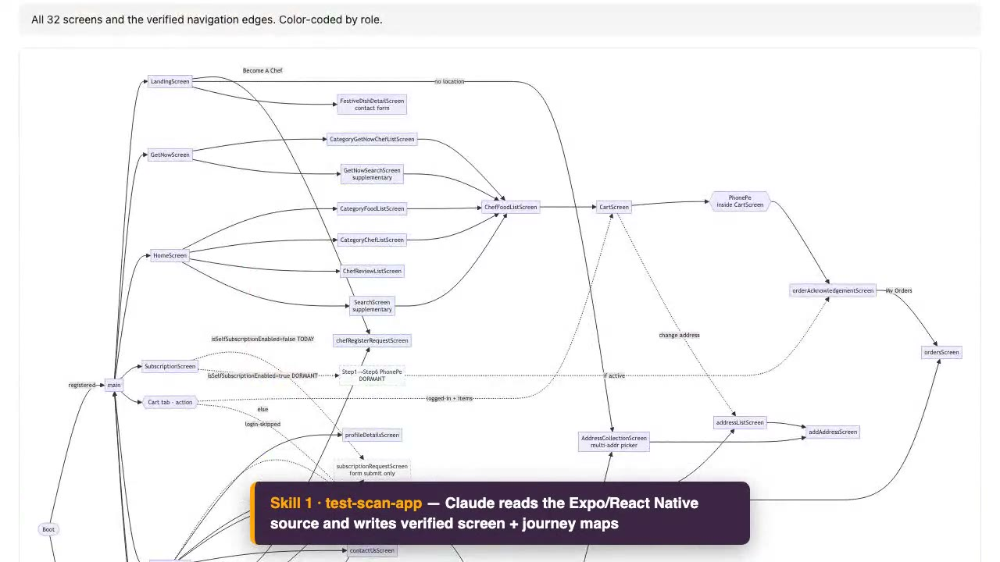
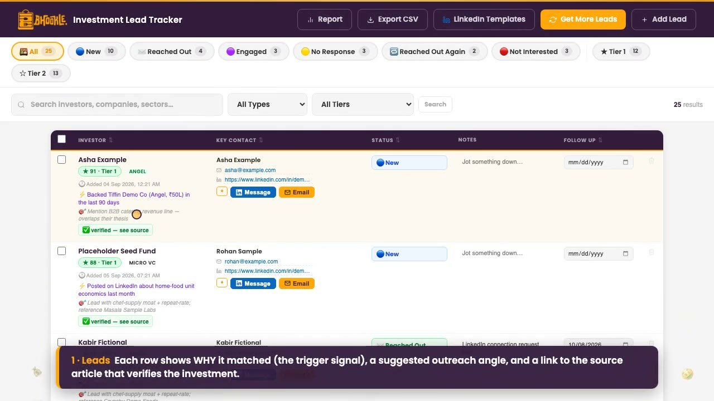
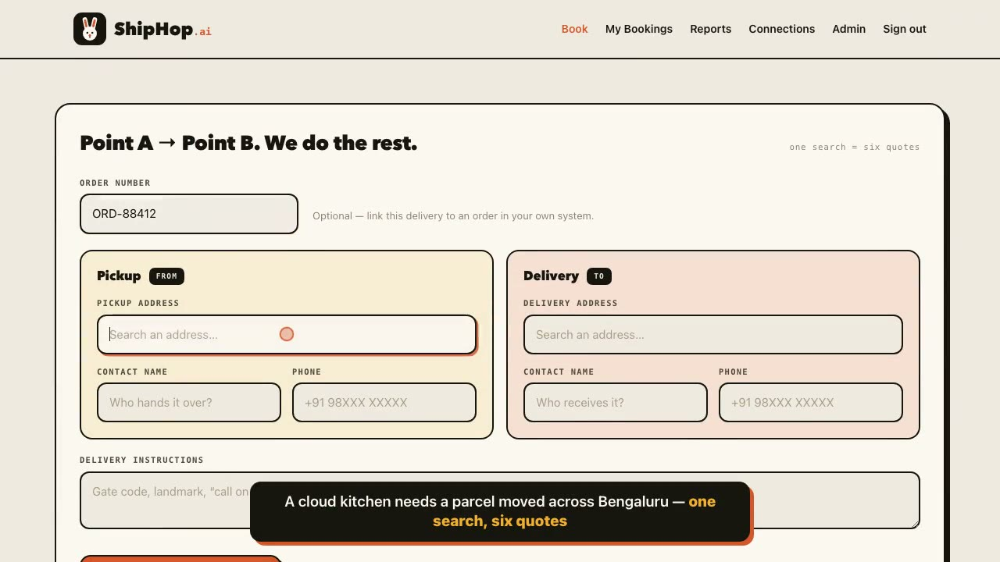
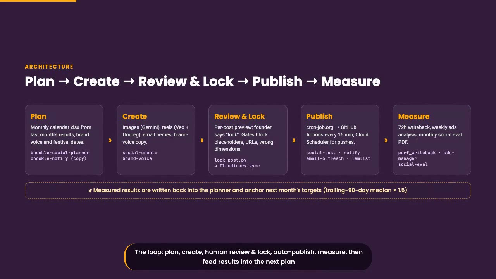

Founder of Bhookle, a home-cooked food marketplace in India. With no QA team, no growth team and no logistics team, I used Claude Code to build those teams as software. Here are four of them, each with a short demo recorded on sample data.

Three chained Claude Code skills take a 33-screen Expo/React Native app from zero tests to a human-reviewed 191-case catalog, compiled into Maestro flows and run on an Android + iOS matrix in GitHub Actions.
▶ Watch demo · 1:40
Built to run a seed raise as a solo founder: it finds angels who might actually back the business, writes a personal first message to each one in my voice, and tracks every touch until the investor replies or says no.
▶ Watch demo · 1:54
A multi-tenant last-mile logistics portal running in production: one search returns fares from six courier networks cheapest-first, books the winner in one click, tracks the rider live and reports on spend.
▶ Watch demo · 1:48
There is no marketing team. Instead, Claude Code skills, GitHub Actions, Firebase Cloud Functions and small workers plan, create, review, publish and measure Bhookle's marketing, with every human approval enforced in code.
▶ Watch demo · 2:23